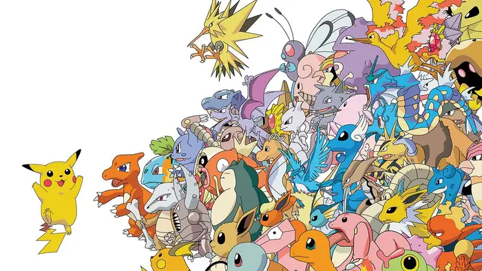
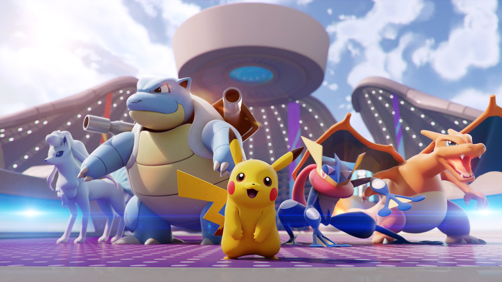
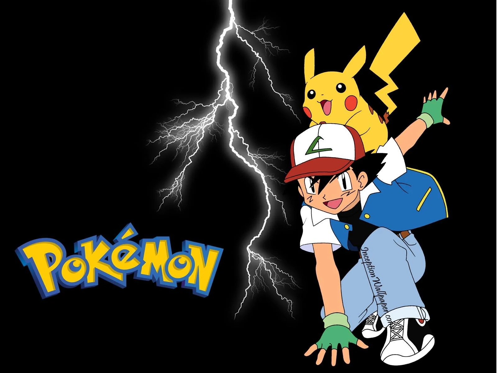

Pokémon(an abbreviation for Pocket Monsters in Japan) is a Japanese media franchise managed by The Pokémon Company, a company founded by Nintendo, Game Freak, and Creatures. The franchise was created by Satoshi Tajiri in 1996,and is centered on fictional creatures called "Pokémon". In Pokémon, humans, known as Pokémon Trainers, catch and train Pokémon to battle other Pokémon for sport. All media works within the franchise are set in the Pokémon universe. The English slogan for the franchise is "Gotta Catch ‘Em All!".There are currently 913 Pokémon species.
  Pokémon is set in the fictional Pokemon universe. There are numerous regions that have appeared in the various media of the Pokémon franchise. There are 8 main series regions set in the main series games: Kanto, Johto, Hoenn, Sinnoh/Hisui, Unova, Kalos, Alola, and Galar. Each of the eight generations of the main series releases focuses on a new region. Every region consists of several cities and towns that the player must explore in order to overcome many waiting challenges, such as Gyms, Contests and villainous teams. At different locations within each region, the player can find different types of Pokémon, as well as helpful items and characters. Different regions are not accessible from one another at all within a single game, only with the exception of Kanto and Johto being linked together in Pokémon Gold, Silver, Crystal, HeartGold and SoulSilver versions. There are also regions set in spinoff games and two islands in the Pokémon anime (Orange Islands and Decolore Islands), all still set within the same fictional universe. Each main series region in the Pokémon universe is based on a real world location. The first 4 introduced regions (Kanto, Johto, Hoenn, and Sinnoh/Hisui) are based on parts of Japan, with later regions being based on parts of the United States (New York City is Unova and Hawaii is Alola), France (Kalos), the United Kingdom (Galar), and Spain and Portugal (generation 9 region).